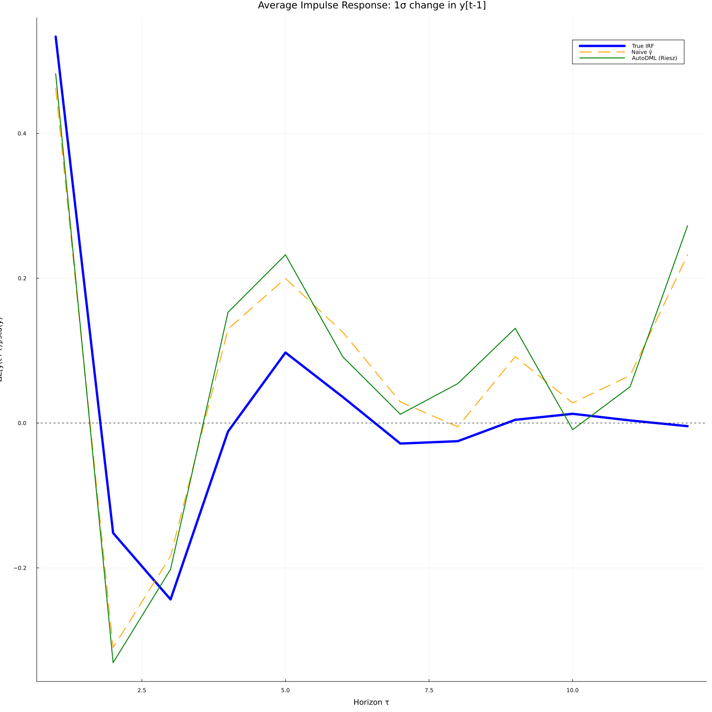
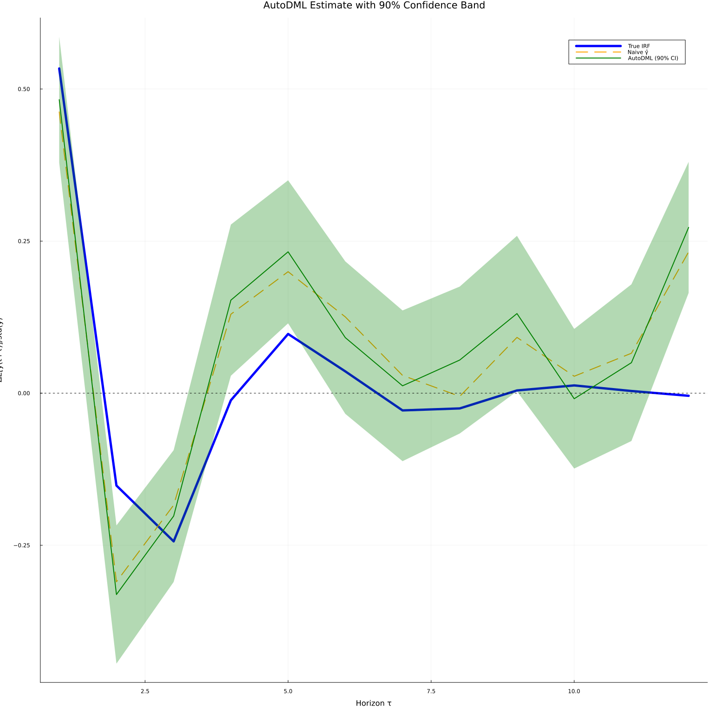

This work is licensed under a Creative Commons Attribution-ShareAlike 4.0 International License
About this document¶
This document was created using Weave.jl. The code is available in on github. The same document generates both static webpages and associated jupyter notebook.
using Pkg
Pkg.activate(joinpath(@__DIR__,".."))
Pkg.instantiate()
if !("DISPLAY" ∈ keys(ENV))
ENV["GKSwstype"] = "nul"
ENV["MPLBACKEND"] = "Agg"
end
ENV["GKS_ENCODING"] = "utf-8"
Automating Orthogonalization¶
A debiased machine learning is that it requires an orthogonal moment conditioon for each parameter of interest. Analytic orthogonalization is labor intensive, error prone, and may not even be possible in some cases. @ceinr2016 review some techniques for constructing orthogonal moments.
@cnr2018 have a mathematically elegant method for automatically constructing orthogonal moments. The approach is further developed in @cnqv2022, @cnr2022, and @chernozhukov2024. @kato2026 provides a python package for this and a collection of related methods.
Orthogonality via Riesz Representers¶
We will follow @cnr2022 and begin by focusing on estimators that are linear in their nonparametric component. where $\gamma_0(x)$ is a conditional exepection, $m()$ is a known function, $m$ is linear in $\gamma$, and $\theta \in \R$. If we focus on one horizon, our example above falls into this setup. Since $m$ is linear, $\gamma \to \Er[m(x,\gamma(x))]$ is a linear functional. If $\gamma \in V$, a vector space of functions, then by definition, $\exists \alpha^\ast \in V^\ast$ such that for all $\gamma \in V$. Without more structure on $V^\ast$, this is little more than alternate notation for $\Er[m(x,\gamma(x))]$. Fortunately in most applications, an appropriate space for $\gamma(x)$ is $V=\mathcal{L}^2(P_x)$. For example, this is a natural choice when $\gamma_0(x) = \Er[y|x]$ In this case, $V = V^\ast$, and we know that $\alpha^\ast$ is of the form The fact that $\alpha^\ast \in V$ is called the Riesz representation theorem. We call $\alpha^\ast$ the Riesz representer for the linear functional $\gamma \to \Er[m(x,\gamma(x))]$.
In the example from the previous section, $\alpha^\ast$ can be explicitly calculated. It is
Regardless of the exact form of $\alpha^\ast$, it is straightforward to verify that
Moreover, it can be shown that this moment condition is orthogonal for any $m$ that is linear in $\gamma$, i.e.,
for all $g$ and $a$ in $V$.
Estimating Riesz Representers¶
In the previous section we have recast the problem of finding an orthogonal moment condition into one of finding a Riesz representer. However, finding a Riesz representer analytically is no easier than analytically deriving an orthogonal moment condition. Therefore, we want a method to estimate $\alpha^\ast$ without knowing it. A trivial observation is that Expanding the square gives where the third line replace $\Vert \cdot \Vert_V^2$ with the expectation over $x$, and the last line used the fact that $\alpha^*$ is the Riesz representer for $\gamma \to \Er[m(x,\gamma(x))]$. This final line gives a minimization problem that only depends on the known function $m$ and the estimable expectation, so it can be used to estimate $\alpha^\ast$.
The above observations can be turned into an estimator by first fixing an approximating space for $V$, $V_n$ (e.g. the set neural network with a given architecture), and an approximated space for $V^\ast$, $V^\ast_n$ (since $V=V^\ast$ you could set $V_n = V^\ast_n$, but this is not necessary). Estimate $\gamma$ in a standard way, Given $\hat{\gamma}$, estimate $\alpha^\ast$ by solving Finally, plug-in the estimates of $\gamma$ and $\alpha$ and take an average to compute $\hat{\theta}$.
Example: Impulse Response via the Riesz Representer¶
We now demonstrate this approach on the same nonlinear AR(3) DGP used in the previous section. We estimate the conditional expectation $\hat\gamma$ with the same neural network as in that section, and then estimate $\hat\alpha$ directly via the Riesz loss without estimating the density $f_x$.
Setup¶
using NeuralNetworkEconomics
docdir = joinpath(dirname(Base.pathof(NeuralNetworkEconomics)), "..", "docs")
using Polynomials, Plots, LinearAlgebra, Statistics, Random, Distributions
using Flux, JLD2, CUDA
The DGP is identical to the one in the previous section.
Random.seed!(747697)
T = 1000
θ_ar = 0.1
r = 0.99
roots = [r * exp(im * θ_ar), r * exp(-im * θ_ar), 0.5]
p = prod([Polynomial([1, -ρ]) for ρ in roots])
ar_coef = -real(coeffs(p))[2:end]
mean_y_fn(α, transform=(x)->x) = ylag -> transform(dot(ylag, α))
function dgp(mean_y, T, sig=1, yinit=zeros(length(ar_coef)))
ylag = copy(yinit)
y = zeros(T)
for t in 1:T
y[t] = muladd(sig, randn(), mean_y(ylag))
ylag[2:end] .= ylag[1:(end-1)]
ylag[1] = y[t]
end
return y
end
μy = mean_y_fn(ar_coef, x -> 1/r * tanh(x))
y = dgp(μy, T, 1.0)
R = 12
L = length(ar_coef)
Δ = 1.0 * std(y)
nsim = 1000
iry = reduce(hcat,
[mean(_ -> (dgp(μy, R, 1.0, y[i:(i+L-1)] .+ [Δ, 0, 0]) .-
dgp(μy, R, 1.0, y[i:(i+L-1)])), 1:nsim)
for i in 1:(T-L+1)]) ./ std(y)
x = copy(reduce(hcat, [y[l:(end-L+l)] for l in L:-1:1])')
Y = copy(reduce(hcat, [y[(L+rr):(end-R+rr)] for rr in 1:R])')
X = x[:, 1:(end-R)]
Δv = Float32.([Δ; 0.0; 0.0])
Naive Estimate¶
We train the conditional expectation model and form the naive plug-in estimate $\hat\gamma(x+\Delta) - \hat\gamma(x)$.
function fit_ce!(model, x, y;
opt=Flux.setup(Flux.NADAM(),model), maxiter=1000, batchsize=length(y))
loss(model,x,y) = Flux.mse(model(x), y)
@show bestloss = loss(model,x,y)+1
lastimprove=0
p = Progress(maxiter, 1)
data = [(x[:,p], y[:,p]) for p in partition(1:size(x,2), batchsize)]
for i in 1:maxiter
Flux.train!(loss, model,
data, opt)
obj = loss(model,x,y)
next!(p)
(i%(maxiter ÷ 10) == 0) && println("\n$i : $obj")
if (obj < bestloss)
bestloss=obj
lastimprove=i
end
if (i - lastimprove > 300)
@warn "no improvement for 300 iterations, stopping"
break
end
end
return(model)
end
R = 12 # how many periods ahead to fit
Y = copy(reduce(hcat,[y[(L+r):(end-R+r)] for r in 1:R])')
X = x[:,1:(end-R)]
modelfile=joinpath(docdir,"jmd","models","ce-auto.jld2")
K = 200
rerun = false
ce_model = Chain(Dense(size(X,1), K, relu),
Dense(K, K, relu),
Dense(K, K, relu),
Dense(K, size(Y,1))) |> gpu
if !isfile(modelfile) || rerun
fit_ce!(ce_model, gpu(Float32.(X)), gpu(Float32.(Y)),
opt=Flux.setup(Flux.NADAM(),ce_model),
maxiter=20000, batchsize=size(Y,2))
cpum = cpu(ce_model)
modelstate = Flux.state(cpum)
JLD2.@save modelfile modelstate
end
cpum = cpu(ce_model)
JLD2.@load modelfile modelstate
Flux.loadmodel!(cpum, modelstate)
ce_model = gpu(cpum)
μhat(x) = let m=cpu(ce_model)
m(x)
end
μhat(x::AbstractVector) = let m=cpu(ce_model)
eltype(x)(m(x)[1])
end
γhat(x) = ce_model(gpu(Float32.(x)))
γx = Float64.(γhat(X))
γx_shift = Float64.(γhat(X .+ Δv))
Riesz Representer via Linear System¶
The Riesz loss is straightforward to write down, but optimising it over an unconstrained neural network is numerically problematic: the empirical loss is unbounded below because $m(x,\alpha) = \alpha(x+\Delta) - \alpha(x)$ is evaluated at the shifted points $x_i + \Delta$, which lie off the training grid. Gradient descent can therefore drive $\alpha(x_i+\Delta) \to +\infty$ without any counteracting penalty.
A practical remedy is to restrict $\alpha$ to the linear span of the penultimate-layer features $\Phi(x)$ of the already-fitted $\hat\gamma$ network. Setting $\alpha(x) = c^\top\Phi(x)$, the Riesz loss becomes a quadratic in $c$, with the unique ridge-regularised minimiser This remains within the same neural-network function class (it is the best linear approximation to $\alpha^\ast$ in the feature space of $\hat\gamma$), and solving the linear system is fast and numerically stable.
feat_model = Chain(ce_model.layers[1:end-1]...) # drop the output layer
X32 = gpu(Float32.(X))
Φ = Float64.(feat_model(X32))
Φ_shift = Float64.(feat_model(X32 .+ gpu(Δv)))
G = Φ * Φ' ./ size(Φ, 2)
m̂ = vec(mean(Φ_shift .- Φ, dims=2))
λ_riesz = 1e-4
c_star = (G + λ_riesz * I) \ m̂
α̂ = vec(c_star' * Φ)
p02, p98 = quantile(cpu(α̂), [0.02, 0.98])
α̂_w = clamp.(α̂, p02, p98)
DML Estimate and Inference¶
Plugging both estimates into the orthogonal moment condition gives Because the moment condition is orthogonal in both $\gamma$ and $\alpha$, we can treat $\hat\gamma$ and $\hat\alpha$ as fixed when computing standard errors, so $\sqrt{n}(\hat\theta - \theta_0)$ is asymptotically normal with variance $\mathrm{Var}(\theta_i)$.
θi = γx_shift .- γx .+ α̂_w' .* (gpu(Y) .- γx)
n_obs = size(θi, 2)
θ_mean = cpu(vec(mean(θi, dims=2)))
se_dml = cpu(sqrt.(vec(var(θi, dims=2)) ./ n_obs))
z90 = cpu(quantile(Normal(), 0.95))
naive_mean = cpu(vec(mean(γx_shift .- γx, dims=2)))
ir_true = vec(mean(iry, dims=2))[1:R];
Results¶
τs = 1:R
fig1 = plot(τs, ir_true, linewidth=5, color=:blue, label="True IRF",
title="Average Impulse Response: 1σ change in y[t-1]",
xlabel="Horizon τ", ylabel="ΔE[y(t+τ)]/std(y)", legend=:topright)
plot!(fig1, τs, naive_mean, linewidth=2, color=:orange, linestyle=:dash, label="Naive γ̂")
plot!(fig1, τs, θ_mean, linewidth=2, color=:green, label="AutoDML (Riesz)")
hline!(fig1, [0.0], color=:black, linestyle=:dot, linewidth=1, label=nothing)

The AutoDML estimate (green) is systematically closer to the true IRF (blue) than the naive plug-in (orange), especially at short horizons where the conditional expectation model is well-identified. The Riesz correction removes the bias that arises from using a slightly misspecified $\hat\gamma$.
The orthogonality also enables honest confidence bands. We form 90% pointwise bands using the asymptotic variance of the moment condition.
fig2 = plot(τs, ir_true, linewidth=5, color=:blue, label="True IRF",
title="AutoDML Estimate with 90% Confidence Band",
xlabel="Horizon τ", ylabel="ΔE[y(t+τ)]/std(y)", legend=:topright)
plot!(fig2, τs, naive_mean, linewidth=2, color=:orange, linestyle=:dash, label="Naive γ̂")
plot!(fig2, τs, θ_mean, ribbon=z90 .* se_dml,
linewidth=2, color=:green, fillalpha=0.3, label="AutoDML (90% CI)")
hline!(fig2, [0.0], color=:black, linestyle=:dot, linewidth=1, label=nothing)

The confidence bands are valid without making distributional assumptions about $\hat\gamma$ or $\hat\alpha$, because the orthogonal moment condition satisfies the Neyman orthogonality condition: first-order perturbations of $\gamma$ or $\alpha$ around their population values leave the expected score unchanged.